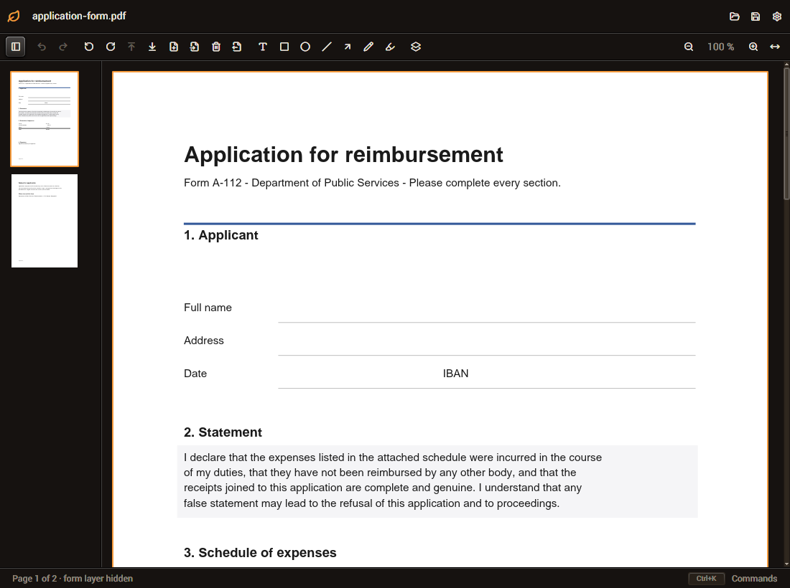
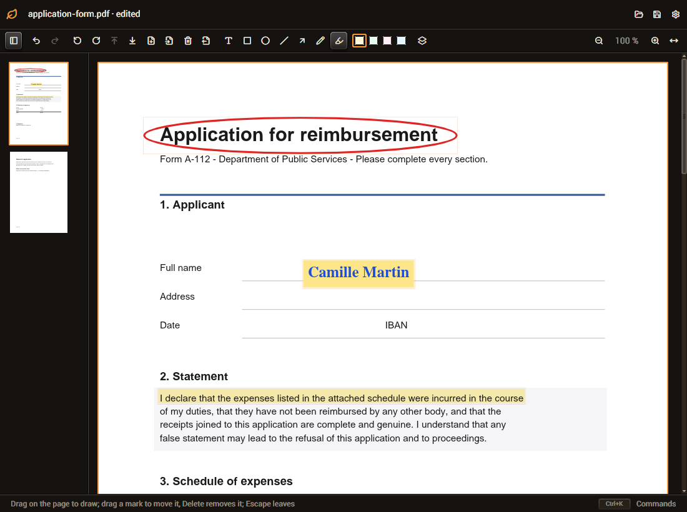
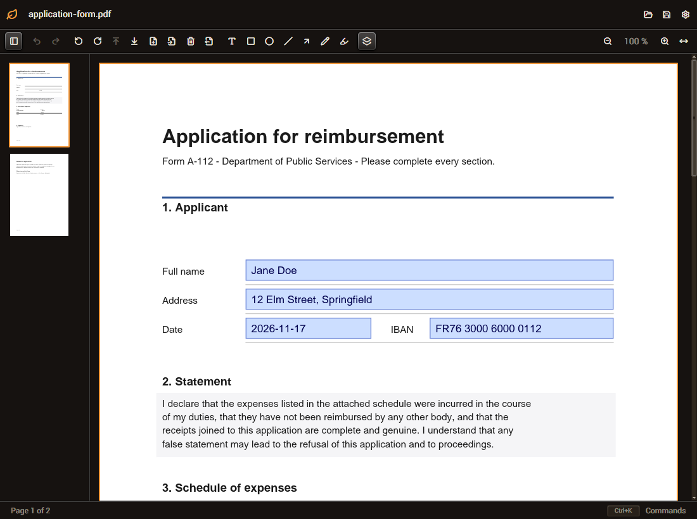
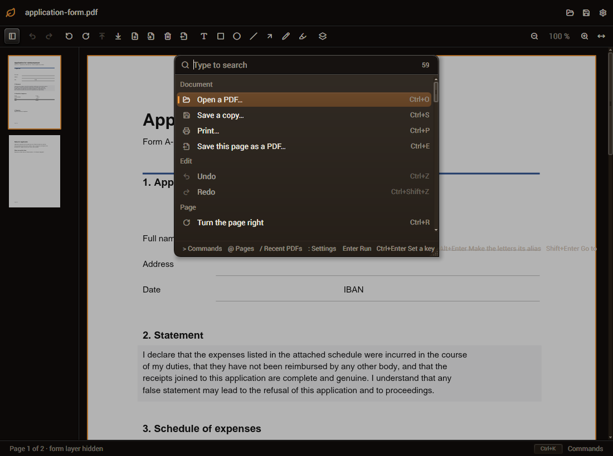
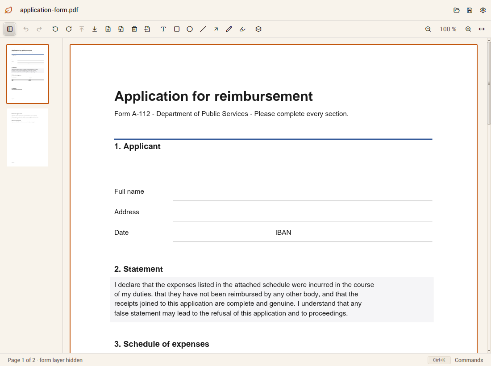

Nothing blocks the page
Signatures, annotations and form fields are not drawn when a PDF opens, and nothing on the page takes the keyboard or asks for input. The document that froze another reader reads here at once.
Open a PDF at once, arrange its pages, put text on them.
· With Nix: nix profile add github:sachahjkl/feuille · MIT

Signatures, annotations and form fields are not drawn when a PDF opens, and nothing on the page takes the keyboard or asks for input. The document that froze another reader reads here at once.
Ctrl+L draws the fields, the signatures and the notes over the pages, as a picture. The file itself is never changed by opening it.
A PDF with a password asks for it in the window. A copy saved from it has no password and no restriction.
Only the pages near the view are drawn, on a thread of their own: a document of a thousand pages scrolls as one of ten, and the window never waits.
Turn, add, remove and reorder pages (drag their thumbnails), take one out as its own PDF, write on a page in the font and colours you choose, circle, frame, point and highlight, print. Every edit undoes; a copy is saved without a password. One version, everything in it.
Ctrl+K finds every command and setting; F1 lists the keys; every key can be changed.




One program for Linux x64, Wayland or X11, nothing beside it. It needs Vulkan and fontconfig.
feuille-{{version}}-linux-x64.tar.gz
The flake builds Feuille from source with everything it needs:
nix run github:sachahjkl/feuille, or add packages.x86_64-linux.default to your configuration.
nix profile add github:sachahjkl/feuille
One program for Windows 10 and 11 (x64), nothing beside it. Unzip it and start feuille.exe.
feuille-{{version}}-windows-x64.zip